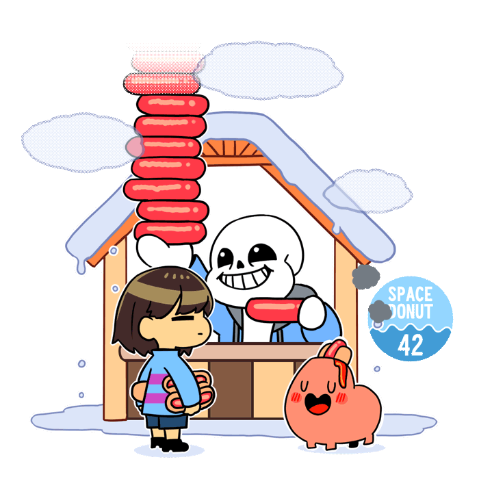
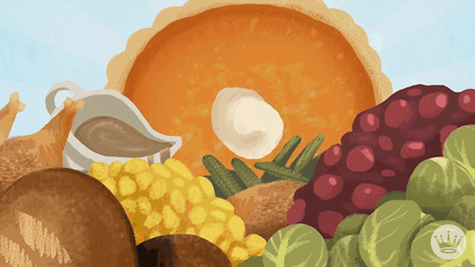

Компания основана двумя братьями из обычной российской провинции – Лысковского района Нижегородской области, расположенного на волжских берегах. Поскольку наше детство прошло на собственном крестьянском хозяйстве, нам не понаслышке известно, что такое здоровые деревенские продукты и чем они отличаются от их магазинных подобий. Сама идея организации компании родилась из простого желания дать обычным горожанам возможность узнать вкус настоящих крестьянских продуктов.
То, что едят, чем питаются - любое вещество, пригодное для еды и питья живым организмам для пополнения запасов энергии и необходимых ингредиентов для нормального течения химических реакций обмена веществ: белков, жиров, углеводов, витаминов, минералов и микроэлементов. Питательные вещества попадают в живой организм, где усваиваются клетками с целью выработки и накопления энергии, поддержания жизнедеятельности, а также обеспечения ростовых процессов и созревания.
 Пищевые добавки — вещества, добавляемые в технологических целях в пищевые продукты в процессе производства, упаковки, транспортировки или хранения для придания им желаемых свойств, например, определённого аромата (ароматизаторы), цвета (красители), длительности хранения (консерванты), вкуса, консистенции и так далее. Некоторые люди стремятся употреблять в пищу продукты без добавок, хотя в строгом смысле слова соль и перец тоже ими являются.
Тип добавки: Пищевые добавки — это природные, идентичные природным или синтетические вещества, которые преднамеренно вводятся в пищевое сырьё, полупродукты или готовые продукты с целью увеличения сроков их хранения или придания им заданных свойств. Они добавляются в пищевые системы по технологическим соображениям на различных этапах производства, хранения, транспортировки готовых продуктов с целью улучшения или облегчения производственного процесса или отдельных его операций, увеличения стойкости продукта к различным видам порчи, сохранения структуры и внешнего вида продукта или намеренного изменения органолептических свойств. Обычно пищевые добавки разделяют на несколько групп:
1.Вещества, улучшающие внешний вид пищевых продуктов (красители, стабилизаторы окраски, отбеливатели). 2.Вещества, регулирующие вкус продукта (ароматизаторы, вкусовые добавки, подслащивающие вещества, кислоты и регуляторы кислотности). 3.Вещества, регулирующие консистенцию и формирующие текстуру (загустители, гелеобразователи, стабилизаторы, эмульгаторы и др.). 4.Вещества, повышающие сохранность продуктов питания и увеличивающие сроки хранения (консерванты, антиоксиданты и др.). К пищевым добавкам не относят соединения, повышающие пищевую ценность продуктов питания и причисляемые к группе биологически активных веществ, такие, как витамины, микроэлементы, аминокислоты.